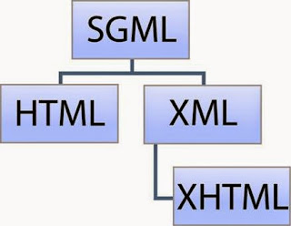
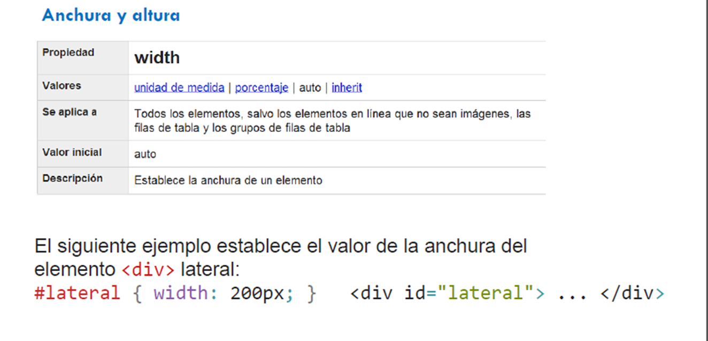
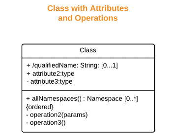
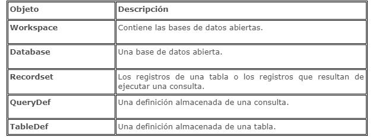

PROGRAMACIÓN WEB

2.1 Introducción
HTML (HyperText Markup Language) es un lenguaje muy sencillo que permite describir hipertexto, es decir, texto presentado de forma estructurada y agradable, con enlaces (hyperlinks) que conducen a otros documentos o fuentes de información relacionadas, y con inserciones multimedia (gráficos, sonido...).
La descripción se basa en especificar en el texto la estructura lógica del contenido (títulos, párrafos de texto normal, enumeraciones, definiciones, citas, etc) así como los diferentes efectos que se quieren dar (especificar los lugares del documento donde se debe poner cursiva, negrita, o un gráfico determinado) y dejar que luego la presentación final de dicho hipertexto se realice por un programa especializado (como Internet Explorer, Netscape, Safari entre otros). Un documento HTML comienza con la etiqueta , y termina con . Dentro del documento (entre las etiquetas de principio y fin de html), hay dos zonas bien diferenciadas: el encabezamiento, delimitado por y , que sirve para definir diversos valores válidos en todo el documento; y el cuerpo, acotado por y , donde reside la información del documento. La versión actual es HTML 5 aun no liberada, ni soportada por todos los navegadores. 2.2 Estructura global
Creación de documentos HTML Los documentos HTML son archivos de texto legibles ASCII con códigos de composición especiales embebidos o incorporados en el texto. Esto significa que los archivos HTML contienen letras, números, signos de puntuación, etc., más los códigos de composición HTML. Insistimos, se pueden leer o modificar directamente desde el bloc de notas.
Aunque no es obligatorio, es muy útil utilizar la extensión .html al archivar el documento HTML desde el bloc de notas. Así podrás saber luego de que tipo de documento se trata. Si utilizas un procesador de texto normal debes utilizar la opción Guardar como texto ASCII. Aspecto de documentos HTML: Lo que distingue a un archivo HTML de cualquier otro archivo de texto es la presencia de códigos de composición, denominados marcadores HTML. Estos códigos se incluyen en el documento y sirve para controlar el formato y la presentación del documento final. Los códigos también sirven para crear hipervínculos con otros documentos.ejemplo
2.3 Elementos básicos
Un tipo de datos es una propiedad o atributo que determina las características y dominios, funciona en operaciones a las que se pueden aplicar, es decir, los tipos de datos varían junto con el lenguaje de programación que se utiliza, al igual que sus estructuras lógicas debido a los compiladores de información que determina cada software.
Nulo
2.4 Formularios
Los formularios son una característica del estándar HTML que permite a los autores llevar datos del exterior al interior de nuestro sistema. Esto se logra mediante componentes que transportan diversos tipos de datos para múltiples aplicaciones donde tu imaginación es el límite Los formularios están delimitados con la etiqueta form> … , que permite reunir varios elementos de formulario, como botones y casillas de texto y que debe poseer los siguientes atributos: method indica cómo se enviarán las respuestas «post» es el valor que envía los datos al agente de procesamiento almacenándolos en el cuerpo del formulario, en tanto que «get» envía los datos agregándolos a la dirección URL y separándolos de la dirección con un signo de interrogación. action indica la dirección a la que se enviará la información (una url o dirección de correo electrónico: mailto:dirección_de_correo@equipo) target nos permite mostrar el resultado en la ventana deseada: target = ‘_blank’ Fuerza que el documento referenciado por el enlace sea mostrado en una nueva ventana del navegador. target = ‘_self’ El documento referenciado se mostrara en la misma ventana...
2.5 Lenguaje de presentación en documento Web
Un lenguaje de presentación define un conjunto de etiquetas y atributos válidos y que ofrecen un significado visual para cada elemento del lenguaje, sino que ofrece un número de reglas sintácticas para poder crear documentos. Uno de los lenguajes más comunes para presentar información web es HTML. El lenguaje de presentación es aquel que indica el formato del texto. Este tipo de marcado es útil para maquetar la presentación de un documento para su lectura, pero resulta insuficiente para el procesamiento automático de la información. El marcado de presentación resulta más fácil de elaborar, sobre todo para cantidades pequeñas de información. Sin embargo resulta complicado de mantener o modificar, por lo que su uso se ha ido reduciendo en proyectos grandes en favor de otros tipos de marcado más estructurados. Se puede tratar de averiguar la estructura de un documento de esta clase buscando pistas en el texto..
2.6 Selectores
.png)
Los selectores permiten seleccionar y manipular elementos HTML. Estos son usados para encontrar o seleccionar elementos HTML basados en su id, clase, tipo, atributo y mas. Los selectores identifican a un elemento dentro de la página Web para luego poder definir sus propiedades. Los distintos tipos de selectores abarcan desde el simple nombre de las etiquetas usadas en HTML (BODY, P, CODE, TABLE, UL, etc.) hasta complejas combinaciones que permiten un juego muy amplio de selecciones dentro de la página.
El conocimiento en profundidad de los distintos selectores es uno de los aspectos más complejos del lenguaje de las Hojas de Estilo y también el que nos permite sacar el máximo provecho de las CSS. Existen muchos editores de páginas Web que facilitan la labor de crear y aplicar Hojas de Estilo, pero los selectores que se pueden definir con estos programas son sólo los más elementales.La complejidad que pueden alcanzar los selectores contextuales escapan a las posibilidades de cualquier herramienta y es ahí donde los diseñadores deberán apelar a sus propios recursos.2.7 Modelo de caja
El modelo de cajas o “box model” es seguramente la característica más importante del lenguaje de hojas de estilos CSS, ya que condiciona el diseño de todas las páginas web. El modelo de cajas es el comportamiento de CSS que hace que todos los elementos de las páginas se representen mediante cajas rectangulares.
Las cajas de una página se crean automáticamente. Cada vez que se inserta una etiqueta HTML, se crea una nueva caja rectangular que encierra los contenidos de ese elemento. La siguiente imagen muestra las tres cajas rectangulares que crean las tres etiquetas HTML que incluye la página: Las cajas de las páginas no son visibles a simple vista porque inicialmente no muestran ningún color de fondo ni ningún borde. La siguiente imagen muestra las cajas que forman la página web de http://www.alistapart.com/ después de forzar a que todas las cajas muestren su borde: Los navegadores crean y colocan las cajas de forma automática, pero CSS permite modificar todas sus características. Cada una de las cajas está formada por seis partes Las partes que componen cada caja y su orden de visualización desde el punto de vista del usuario son las siguientes: Contenido (content): se trata del contenido HTML del elemento (las palabras de un párrafo, una imagen, el texto de una lista de elementos, etc.) Relleno (padding): espacio libre opcional existente entre el contenido y el borde. Borde (border): línea que encierra completamente el contenido y su relleno. Imagen de fondo (background image): imagen que se muestra por detrás del contenido y el espacio de relleno. Color de fondo (background color): color que se muestra por detrás del contenido y el espacio de relleno. Margen (margin): separación opcional existente entre la caja y el resto de cajas adyacentes.
3.1 Introducción el lenguaje
La programación del lado servidor que son aquellos lenguajes que son reconocidos, ejecutados e interpretados por el propio servidor y que se envían al cliente en un formato comprensible para él. Existe una multitud de lenguajes concebidos o no para Internet. Cada uno de ellos explota más a fondo ciertas características que lo hacen más o menos útiles para desarrollar distintas aplicaciones.
Un lenguaje del lado del servidor es aquel que se ejecuta en el servidor web, justo antes de que se envíe la página a través de Internet al cliente. Las páginas que se ejecutan en el servidor pueden realizar accesos a bases de datos, conexiones en red, y otras tareas para crear la página final que verá el cliente. Los lenguajes del lado del servidor son utilizados para desarrollar paginas dinámicas y estos medios son: ASP (Active Server Pages) JSP (Java Server Pages) PERL (Practical Extension and Report Languaje) PHP (Hypertext Preprocessor)Lenguajes del lado cliente HTML
JAVASCRIPT
3.2 Manejo de Frameworks
Framework.
En el desarrollo de Software, un framework es una estructura conceptual y tecnológica de soporte definida, normalmente con artefactos o módulos de software concretos, en base a la cual otro proyecto de software puede ser organizado y desarrollado. Típicamente, puede incluir soporte de programas, librerias y un lenguaje interpretado entre otros programas para ayudar a desarrollar y unir los diferentes componentes de un proyecto. Representa una arquitectura de software que modela las relaciones generales de las entidades del dominio. Provee una estructura y una metodología de trabajo la cual extiende o utiliza las aplicaciones del dominio. Los framework hacen que el desarrollador no esté continuamente “reinventado la rueda” y se centre en el problema que quiere resolver y no en la implementación de4 Razones para utilizar un framework a la hora de programar
1.- Evitar escribir código repetitivo
La mayoría de los proyectos tienen partes comunes necesarias para el funcionamiento como, por ejemplo, acceso a base de datos, validación de formularios o seguridad. Un framework nos evita tener que programar estas partes, de esta manera nos resulta más fácil centrarnos en programar la aplicación.2.- Utilizar buenas prácticas
Los frameworks están basados en patrones de desarrollo, normalmente MVC (Modelo-Vista-Controlador) que ayudan a separar los datos y la lógica de negocio de la interfaz con el usuario. Vamos, que gracias a ellos, lo tenemos todo más ordenado.3.-Permitir hacer cosas avanzadas que tú no harías
Está claro que un framework siempre te va permitir hacer cosas de una manera fácil y segura, que para ti serían imposibles o al menos te costaría mucho tiempo hacerlas.4.-Desarrollar más rápido
Si tenemos en cuenta los puntos anteriores, sabremos que desarrollar una aplicación con un framework nos permite hacerlo más rápido, más limpio y más seguro.3.3 Estructuras de Control
Los programas que se pueden realizar utilizando solamente variables y operadores son una simple sucesión lineal de instrucciones básicas. Sin embargo, no se pueden realizar programas que muestren un mensaje si el valor de una variable es igual a un valor determinado y no muestren el mensaje en el resto de casos. Tampoco se puede repetir de forma eficiente una misma instrucción, como por ejemplo sumar un determinado valor a todos los elementos de un array.
Para realizar este tipo de programas son necesarias las estructuras de control de flujo, que son instrucciones del tipo "si se cumple esta condición, hazlo; si no se cumple, haz esto otro". También existen instrucciones del tipo "repite esto mientras se cumpla esta condición". Si se utilizan estructuras de control de flujo, los programas dejan de ser una sucesión lineal de instrucciones para convertirse en programas inteligentes que pueden tomar decisiones en función del valor de las variables.ESTRUCTURA IF...ELSE
La estructura más utilizada en JavaScript y en la mayoría de lenguajes de programación es la estructura if. Se emplea para tomar decisiones en función de una condición. Su definición formal es: if(condicion) { ... }3.4 Manipulación de objetos
Acorde al W3C el Modelo de Objetos del Documento es una interfaz de programación de aplicaciones (API) para documentos validos HTML y bien construidos XML. Define la estructura lógica de los documentos y el modo en que se accede y manipula.
El DOM permite un acceso a la estructura de una página HTML mediante el mapeo de los elementos de esta página en un árbol de nodos. Cada elemento se convierte en un nodo y cada porción de texto en un nodo de texto. Para comprender más fácilmente . Como puede verse un elemento [a] se encuentra localizado dentro de un elemento [p] del HTML, convirtiéndose en un nodo hijo, o simplemente hijo del nodo [p], de manera similar [p] es el nodo padre. Los dos nodos li son hijos del mismo padre, llamándose nodos hermanos o simplemente hermanos. El DOCTYPE (abreviado del inglés “document type declaration”, declaración del tipo de documento) informa cual versión de (X)HTML se usará para validar el documento; existen varios tipos a seleccionar. El DOCTYPE, debe aparecer siempre en la parte superior de cada página HTML y siendo un componente clave de las páginas web “obedientes” a los estándares.4.1 Introducción al lenguaje
JavaScript es un lenguaje de programación usado principalmente para crear páginas web dinámicas. Una página web dinámica es aquella que incorpora efectos como texto que aparece y desaparece, animaciones, acciones activadas al pulsar botones y ventanas con mensajes de aviso al usuario.
Técnicamente, JavaScript es un lenguaje de programación interpretado, y no es necesario compilar los programas para ejecutarlos. En otras palabras, los programas escritos con JavaScript se pueden probar directamente en cualquier navegador sin necesidad de procesos intermedios. A pesar de su nombre, JavaScript no guarda ninguna relación directa con el lenguaje de programación Java. Legalmente, JavaScript es una marca registrada de la empresa Sun Microsystems. Su nombre es exclusivamente por marketing, ya que Java era la palabra de moda en el mundo informático y de Internet de la época de desarrollo.Cómo incluir JavaScript en documentos XHTML
4.2 Estructuras de Control
Como mencionamos anteriormente, un algoritmo está compuesto por una sucesión ordenada de comandos que se ejecutan uno detrás de otro. Sin embargo, con frecuencia es necesario recurrir a comandos especiales que alteran o controlan el orden en el que se ejecutan las acciones. Llamamos estructuras de control del flujo de las acciones al conjunto de reglas que permiten controlar el flujo de las acciones de un algoritmo o programa. Las mismas pueden clasificarse en secuenciales, condicionales e iterativas.
Estructuras de control secuenciales
Estructuras de control condicionales
4.3 Tratamiento de Formularios
Los formularios son una característica del estándar HTML que permite a los autores llevar datos del exterior al interior de nuestro sistema. Esto se logra mediante componentes que transportan diversos tipos de datos para múltiples aplicaciones donde tu imaginación es el límite.
Los formularios están delimitados con la etiqueta <"form"> … <" /form">, que permite reunir varios elementos de formulario, como botones y casillas de texto y que debe poseer los siguientes atributos:4.4 Manejo de objetos del servidor
El Modelo de Objetos de Documento (DOM - Document Object Model -) describe cómo todos los elementos en una página HTML, tales como campos de entrada, imágenes, etc, se relacionan con la estructura más alta: el propio documento. Llamando al elemento por su nombre correcto DOM, podemos influir en él mediante un lenguaje de programación, e,g. Javascript, Java, etc.
JavaScript por si solo tiene muchas limitaciones pero se han desarrollado muchas y excelentes librerias que le han dado realmente contenido dinámico al desarrollo web. jQuery es uno de los complementos más esenciales para el desarrollo web, usado en millones de sitios en toda la web, ya que nos facilita mucho el desarrollo de aplicaciones enriquecidas del lado del cliente, en Javascript, compatibles con todos los navegadores. jQuery no es un lenguaje, sino una serie de funciones y métodos de Javascript. Por tanto, Javascript es el lenguaje y jQuery es una librería que podemos usar opcionalmente si queremos facilitar nuestra vida cuando programamos en Javascript. A veces nos podemos referir a jQuery como framework o incluso como un API de funciones, útiles en la mayoría de proyectos web. Write: Permite escribir texto html desde Javascript. El texto se escribe directamente el body del html. Es la forma más fácil de escribir HTML desde Javascript, lo cual no quiere decir que es la mejor manera de escribir código HTML desde Javascript o incluso que va a trabajar en todas las situaciones. De hecho, el método document.write es muy limitado en lo que puedes hacer4.5 Creación de clases
El concepto de programación de objetos es una técnica que intenta asemejar la forma de pensar humana. Para comprender un poco más este concepto podemos pensar un aspecto de la vida real como un sistema basado en objetos:
una silla , un coche, un bolígrafo, unas sandalias, un vaso, y hasta un ser humano, y cada objeto con sus características que la describen, que, en programación las nombramos (propiedades), y sus capacidades o tareas posibles a realizar (métodos). Continuando con el ejemplo , un coche resulta ser el objeto con propiedades como color, forma, puertas, llantas, motor y puede realizar tareas como arrancar, frenar, dar vuelta , retroceder, igual que el coche , un ser humano también puede ser un objeto es decir cumple con los requisitos para serlo, tiene forma, color, extremidades y tiene capacidad de correr, brincar, hablar, gritar, entre otras.
4.6 Acceso a datos
Los Objetos de acceso a datos (DAO) son una serie de objetos que le permiten tener acceso y manipular datos mediante programación en bases de datos locales o remotas. Puede utilizar DAO para administrar bases de datos, así como sus objetos y su estructura. En esta sección aprenderá a utilizar DAO para recuperar y usar datos de una base de datos. Para tener acceso y manipular datos mediante programa debe comprender la jerarquía de DAO. El orden de los objetos en DAO se conoce como su modelo de objetos. El modelo de objetos de DAO le permite escribir código que puede aprovechar la funcionalidad de la base de datos.
EL MODELO DE OBJETOS DE DAO

5.1 Conceptos generales
wc3 es un servicio web como un sistema de software diseñado para soportar la interaccion de una maquina con otra maquina en una red, con una interfaz en un formato procesable por una maquina conocido por el acronimo wsdl y otros interactuan utilizando mensajes soap transportados utilizando http serializado xml. Tambien identificar dos clases principales de servicios Web como: *servicios Web REST-compliant Su objetivo principal del servicio es de manipular representaciones XML de recursos web utilizando un conjunto uniforme de operacionesn stateless. * servicios Web arbitrarioS servicio puede exponer un conjunto arbitrario de operaciones.
Un servicio web es un sistema de entrada/salida, al que se le puede pasar una serie de parámetros con el fin de obtener un resultado en concreto y recuperarlo para ser mostrado en una aplicación.
5.2 Tipos de Servicios en la nube
a computación en la nube o cloud computing te permite almacenar tu información y procesar programas en servidores remotos, y acceder a ellos desde cualquier dispositivo conectado a Internet sin importar dónde estés. Además de que ahorra capacidad de procesamiento y de almacenamiento en tu computadora de escritorio o portátil, también te asegura los mejores sistemas de encriptación y seguridad en red. La rápida adopción de esta tecnología está cambiando radicalmente la manera en que trabajan las empresas, al reducir sus costos y aumentar su competitividad.
Es momento de que tú también pases de preguntarte ¿qué es la nube? y pases al ¿cómo funciona? Al profundizar tu conocimiento sobre las aplicaciones en la nube, podrás evaluar la manera en que la utilización de sus tres tipos de servicios (SaaS, IaaS y PaaS) puede ayudarte a optimizar el manejo de tu negocio en la nube. Software como Servicio (SaaS) El SaaS te ofrece aplicaciones a las que accedes a través del navegador web que estés utilizando. La lógica de las aplicaciones y tus datos se ejecutan y almacenan en un servidor externo y no en tu computadora. Puedes comprar el software a través de una suscripción, cuyo precio varía dependiendo del espacio que requieras en el servidor. Hay miles de ejemplos de las aplicaciones SaaS disponibles para tu empresa. Entre ellas, la más popular es Salesforce.com, que maneja herramientas de gestión de relación con el cliente (CRM, por su sigla en inglés). Otras aplicaciones SaaS destacadas son: net Google Docs Microsoft Office 3655.3 Patrones de diseño
Un patrón de diseño es básicamente una forma reutilizable de resolver un problema común en el desarrollo de software. Si la forma de solucionar este problema se puede extraer, explicar y reutilizar en múltiples ámbitos y en muchas ocasiones, en ese caso nos hemos encontrado con un patrón de diseño.
Los patrones de diseño por útiles por diferentes motivos: Si los conoces y los aplicas, te van a ahorrar tiempo, porque evitan volver a pensar en cómo resolver ese tipo de problema que resuelve el patrón. Ayudan a estar seguro de que el código es válido, porque es una solución que, aparte de que la estás usando tú, la utilizan millones de desarrolladores, con lo cual están más que probadas y testeadas, y son soluciones que funcionan. Establecen el empleo de un lenguaje común, ya que cuando hables con tus compañeros de desarrollo les puedes decir que estás utilizando un patrón y van a saber a qué te estás refiriendo.5.4 Estándares en servicios
Uno de los atributos clave de estándares de Internet es que se centran en protocolos y no en implementaciones. Internet se compone de tecnologías heterogéneas que operan conjuntamente de modo satisfactorio mediante protocolos compartidos. Esto impide que los proveedores individuales impongan un estándar en Internet. El desarrollo del software de código fuente abierto desempeña un rol fundamental para proteger la interoperatividad de implementaciones de estándares del proveedor.
Los estándares siguientes desempeñan roles clave en servicios Web: UDDI (Universal Description, Discovery and Integration), WSDL (Web Services Description Language), WSIL (Web Services Inspection Language), SOAP y WS-I (Web Services Interoperability). La relación entre estos estándares se describe en la Figura 2. La especificación UDDI define estándares abiertos independientes de la plataforma que permiten a las empresas compartir información en un registro de empresa global, encontrar servicios en el registro y definir cómo actúan conjuntamente en Internet. Si desea más información sobre UDDI, consulte la página www.uddi.orgWSIL es una especificación abierta basada en XML que define un método de descubrimiento de servicios distribuidos que suministra referencias a descripciones de servicio en el punto de ofertas del proveedor de servicios, especificando cómo comprobar si hay servicios Web disponibles en un sitio Web. Un documento WSIL define las ubicaciones en un sitio Web donde se pueden buscar descripciones del servicio Web. Dado que WSIL se centra en el descubrimiento de servicios distribuidos, la especificación WSIL complementa UDDI facilitando el descubrimiento de servicios que están disponibles en sitios Web que quizá no se enumeren aún en un registro UDDI. En un tema aparte de esta documentación se describe la Relación entre UDDI y WSIL. Si desea más información sobre WSIL, consulte la página www.ibm.com/developerworks/webservices/library/ws-wsilspec.html
5.5 Plataformas tecnológicas
Arquitectura de la información web: es la disciplina encargada de la organización y estructuración de la información en los websites.
Servidor web: es un programa diseñado para transferir hipertextos, páginas web o páginas HTML (HyperText Markup Language). Estos son textos complejos con enlaces, figuras, formularios, botones y objetos incrustados como animaciones o reproductores musicales. El programa implementa el protocolo HTTP (HyperText Transfer Protocol) que pertenece a la capa de aplicación del modelo OSI. Ejecutado en un ordenador, el servidor web se mantiene a la espera de peticiones por parte de un navegador web y responde a estas peticiones adecuadamente, mediante una página web que se exhibirá en el navegador o mostrando un mensaje si se detectó algún error. A manera de ejemplo, si escribimos www.google.com en nuestro navegador, éste hará una petición HTTP al servidor de dicha dirección. Acto seguido, el servidor responderá al cliente enviando el código HTML de la página. Luego el cliente recibe el código, lo interpreta y lo exhibe en pantalla. La interpretación del código HTML consiste en mostrar las fuentes, los colores y la disposición de los textos y objetos de la página. Por su parte, el servidor se limita a transferir el código de la página sin realizar interpretación alguna. Servicio DNS: en castellano se denomina sistema de nombres de dominio. Se trata de un sistema de nomenclatura jerárquica para computadoras, servicios o cualquier recurso conectado a internet o a una red privada. Asocia información variada con nombres de dominios asignados a cada uno de los participantes. Su función más importante es "traducir" nombres inteligibles para las personas en identificadores binarios asociados con los equipos conectados a la red, con la finalidad de localizar y direccionar estos equipos mundialmente. Otra función clave de los protocolos DNS es la asignación de nombres a direcciones IP. Cada sitio web cuenta con una dirección IP, pero para tener acceso a ellas no digitamos dichas direcciones sino su nombre precedido de www y con una terminación como .org, .com, etc. La mayoría de usuarios acceden a los sitios web empleando estos nombres y no las direcciones IP..5.6 Seguridad e interoperabilidad
La característica principal de un Servicio Web es que le permite cierto grado de flexibilidad, accesibilidad yinteroperabilidad. Esto permite que los desarrolladores abstraigan la lógica de negocio y se centren en el desarrollo del servicio sin preocuparse de los criterios anteriormente citados.
Como objetivos básicos a cubrir por la seguridad de un servicio WEB El Instituto de Ingenieros Eléctricos y Electrónicos (IEEE) define interoperabilidad como la habilidad de dos o más sistemas o componentes para intercambiar información y utilizar la información intercambiada. La característica principal de un Servicio Web es que le permite cierto grado de flexibilidad, accesibilidad y interoperabilidad. Esto permite que los desarrolladores abstraigan la lógica de negocio y se centren en el desarrollo del servicio sin preocuparse de los criterios anteriormente citados. Como objetivos básicos a cubrir por la seguridad de un servicio WEB Es necesario asegurar que existe una autenticación mutua entre el cliente que accede a los servicios web y el proveedor de dichos servicios.Se debe mantener una política de autorización del acceso a recursos y, más importante, a operaciones y procesos en un entorno en el que debe administrarse y controlarse el acceso de clientes, proveedores, vendedores, competidores y los posibles ataques que reciban de personal externo. Mantener al cliente identificado, de manera que se identifique una sola vez y pueda acceder a servicios en diversos sistemas, sin que resulte necesario identificarse nuevamente en cada uno de ellos.
Controlar y asegurar la confidencialidad de los datos intercambiados, ya que SOAP no es capaz de cifrar la información, la cual viaja en claro a través de la red.
Es necesario asegurar la comunicación con algún estándar que permita crear un canal seguro de comunicación. El estándar ya firmemente establecido de creación de canales seguros SSL y el cifrado de partes específicas de documentos mediante el cifrado XML son las direcciones que se están siguiendo en este terreno. Se debe asegurar la integridad de los datos, de manera que estén protegidos a los posibles ataques o a manipulaciones fortuitas. En este campo se está utilizando el estándar de firmas XMLDSIG, que permiten la firma de partes específicas del documento XML. Comprobar que no se repudian las operaciones, para lo cual es necesario mantener firmas en XML.